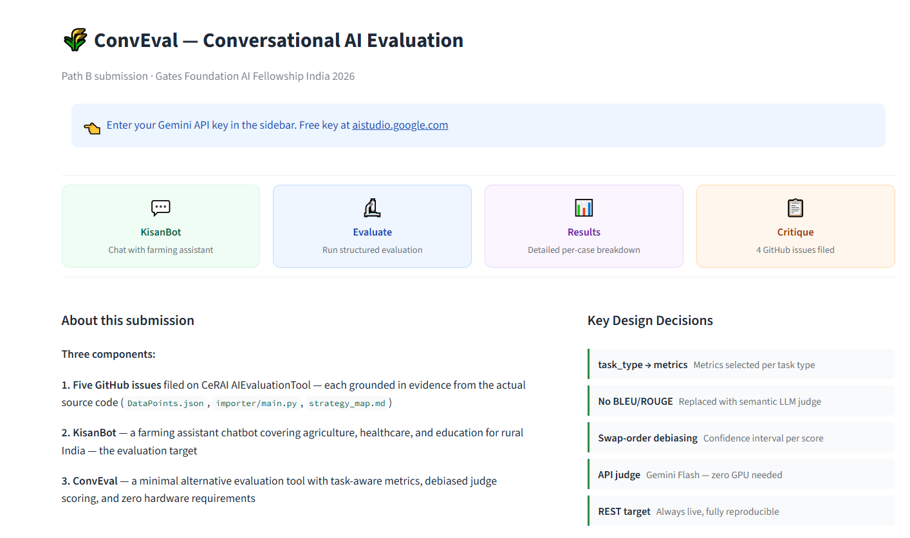

The app

The problem
Real advice happens over a conversation. The farmer adds details, the assistant should ask for what is missing, and the advice is only useful if the whole exchange gets the task done. The fellowship asked us to examine IIT Madras's CeRAI AI Evaluation Tool and propose something better.
Three parts
1Critique of CeRAI
GitHub issues on the CeRAI tool, each grounded in its source code (data points, importer, strategy map).
2KisanBot
A farming assistant for rural India covering agriculture, health and education questions: the system under test.
3ConvEval
A minimal evaluator with task-aware metrics, debiased judging and no special hardware.
Design decisions
Metrics follow the task
Each conversation's task type decides which metrics apply, so a diagnosis conversation is not judged like a weather question.
Semantic judging, not BLEU/ROUGE
Word-overlap scores miss whether advice is right for the farmer, so an LLM judge scores meaning.
Swap-order debiasing
LLM judges favour whichever answer they see first. The judge sees answers in both orders, and each score comes with a confidence interval.
Runs anywhere, reproducibly
An API judge (Gemini Flash) needs no GPU, and evaluating a live REST endpoint keeps runs reproducible.
Why it matters for HCI
Judge the interaction, not the outputAn AI system should be judged on whether it helps a person in their actual situation, over the whole interaction. The same idea shaped how I evaluated Pip.
Links
It asks for a free Gemini API key from aistudio.google.com; the app may take a moment to wake.